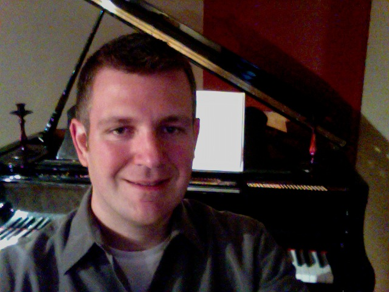

About Me

Greetings from Minneapolis! On these pages you will find a little bit of info about me, some samples of my work, and a few different ways to contact me.
I am currently a software engineer working on compiler development at Cray, Inc. We see to it that high-performance applications are optimized for Cray's supercomputers, which can contain tens of thousands of CPU cores. Prior to that, I spent 14 years at Intel in Portland, OR testing their microprocessors. As one of the first people to see and use many of the newest CPUs that Intel created in the last decade or so, I've long witnessed innovation happening in realtime.
But there is much more to my life than work! Cycling around the Twin Cities and along the many lovely lakes and forests of Minnesota keeps me occupied during the warmer months, and skiing keeps me happy in the winter. In addition, I'm a life-long pianist who enjoys playing everything from classical to contemporary. And anything competitive, like a strategic game, a good debate, or even classic 5k run, will always get me excited!